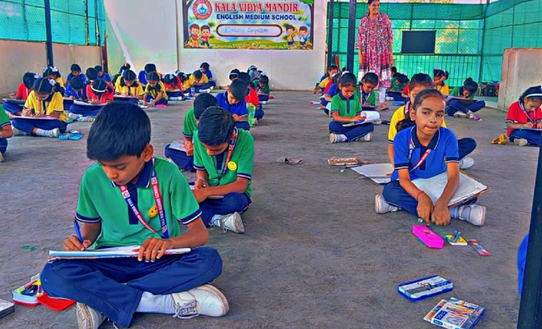
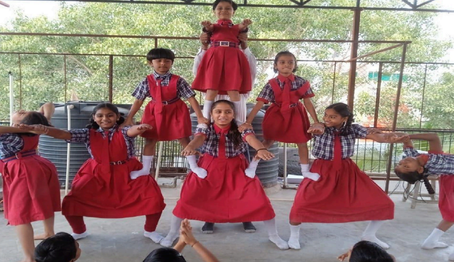
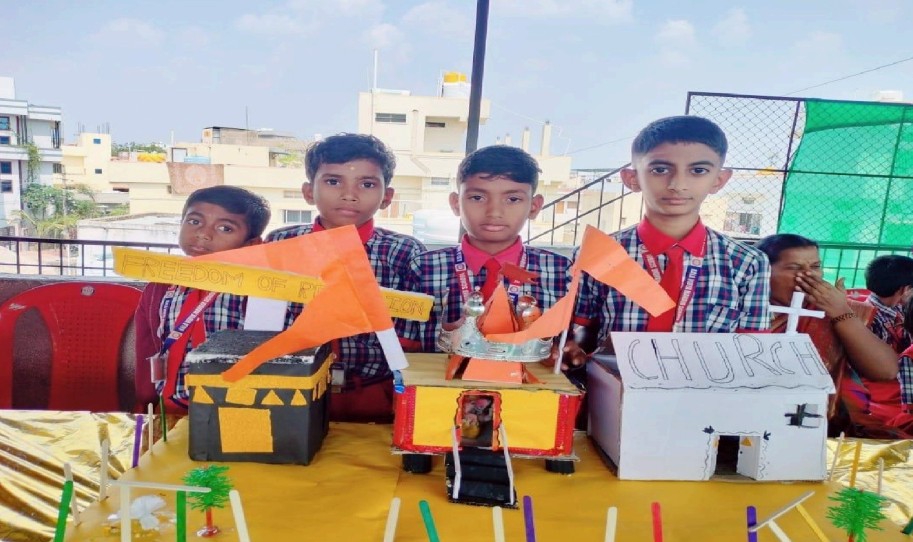
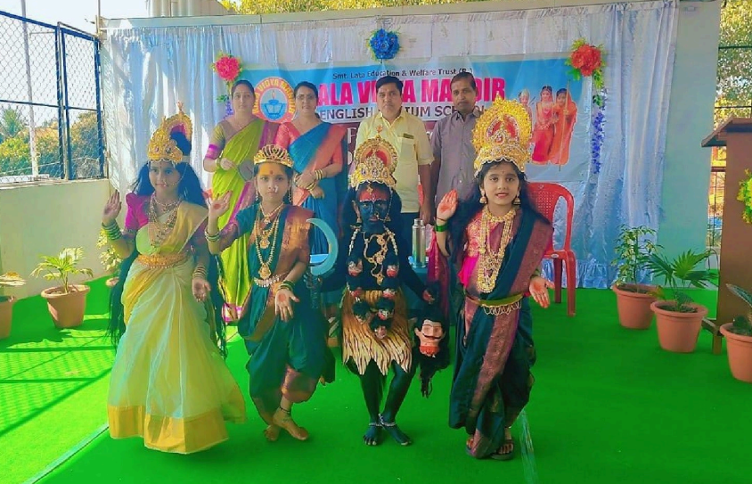
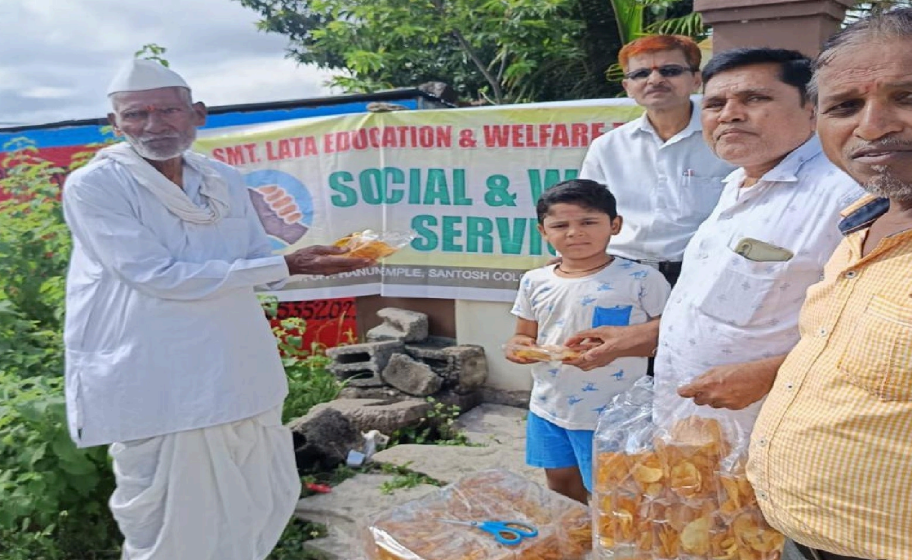
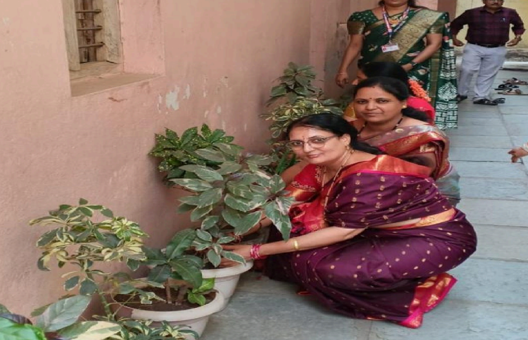

Help Us Now Our Core Initiatives

FREE EDUCATION INITIATIVE
Ensuring quality education for children from economically disadvantaged families...

KARATE AND YOGA ACTIVITY
Building confident, disciplined, and healthy individuals through physical training...

SCIENCE EXHIBITION PROGRAM
Encouraging curiosity and scientific thinking through hands-on experimentation...

SCHOOL CULTURAL PROGRAM
Nurturing creativity and cultural identity through art, music, and dance...

FOOD DISTRIBUTION PROGRAM
Supporting struggling families by meeting their basic nutritional needs...

PLANTATION PROGRAM
Promoting environmental protection and sustainable green cover for the future...
Learn More About Us Our Commitment & Vision
Smt. Lata Education and Welfare Trust is a non-profit organization dedicated to improving the lives of underprivileged and marginalized communities through compassion and service. We work tirelessly to provide opportunities that enable individuals to live with dignity and self-reliance.
Get Involved